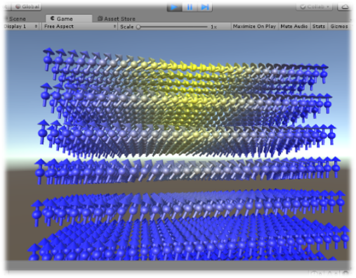
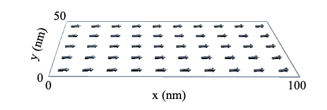

磁性体シミュレーションの研究についての紹介です。


強磁性体（磁石のこと）の研究がこの十数年、活発に行われている背景を受けて、磁性体のシミュレーションプログラムを作製しています。 磁性体内部の磁気が時間と空間を変数とする偏微分方程式で記述できるのですが、それを手計算で行えるのは球や無限遠に長い円柱や、無限遠に平たい直方体だけです。 そのため数値解析を駆使して，強磁性体内部の磁気的な動きをシミュレーションします。 対象とする磁性材料や形状に対して、有効磁場をどのように記述するか、どのような数値解析アルゴリズムを構築するかが課題となります。
(C) 2014- 釧路工業高等専門学校 創造工学科 エレクトロニクスコース 機能材料研究室. All rights reserved.